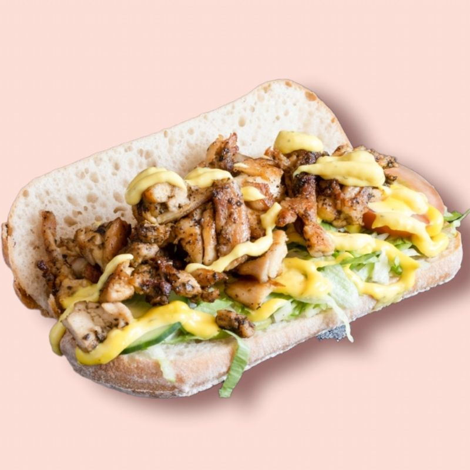
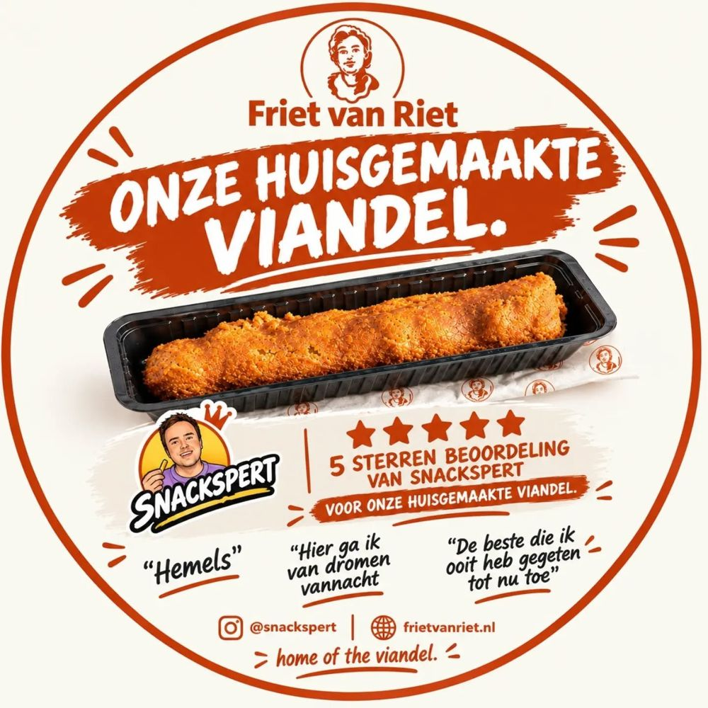
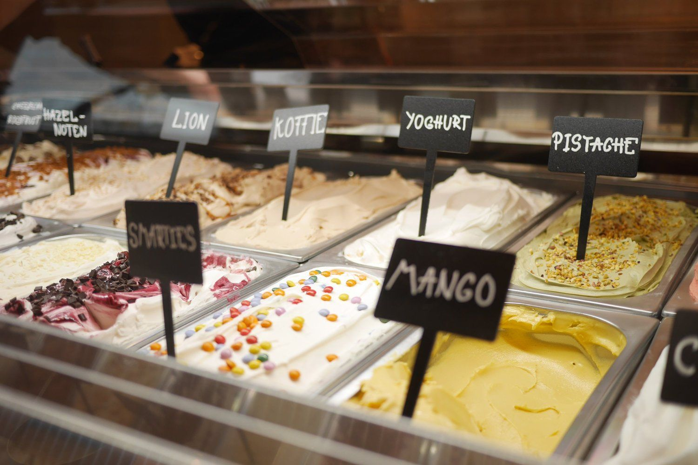
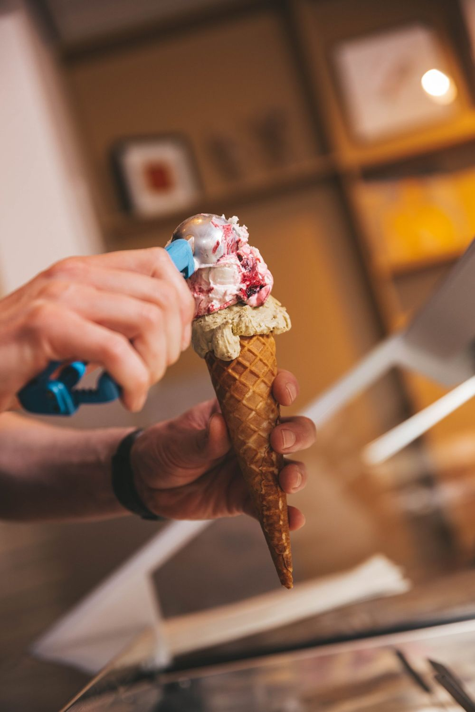
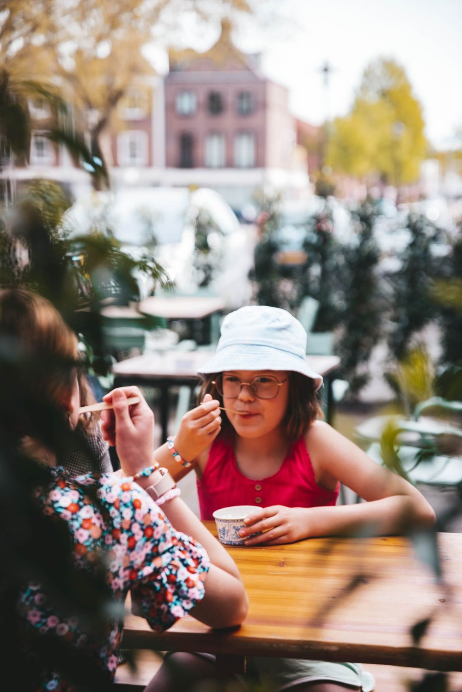
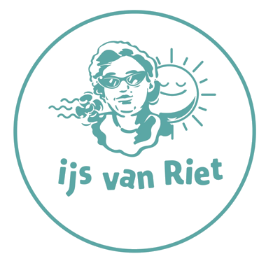
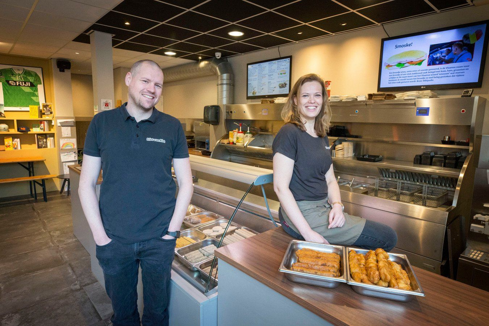

Huisgemaakt
Friet stoofvlees
Verse friet met stoofvlees uit eigen keuken. Lekker met onze tartaarsaus erbij.
vanaf € 7,50

Familiezaak in de derde generatie aan het Mgr. Nolensplein in Breda. Snacks en sauzen maken we zelf, naar eigen recept. En sinds 2023 scheppen we ook ijs in 18 smaken.
Veel maken we nog zelf, zoals in de tijd dat Oma Riet begon. Aangevuld met goede producten van ambachtelijke leveranciers.
Verse friet met stoofvlees uit eigen keuken. Lekker met onze tartaarsaus erbij.
vanaf € 7,50
Met een goudgeel korstje, naar traditioneel familierecept.
€ 3,20
Malse kip en verse ui op een stokje, in een goudgeel korstje.
€ 3,95
Malse beefburger van de grillplaat met cheddar, bacon, burgersaus en augurkenrelish.
€ 7,60
Zacht puntje met Zuid-Amerikaans gekruide vega kip, kerriemayonaise en rauwkost.
€ 5,25
Verse friet met satésaus uit eigen keuken, mayo en uitjes.
vanaf € 4,95
Onze viandel maken we zelf, naar het familierecept. De Snackspert, dé snackkenner van Nederland, kwam hem proeven en gaf hem vijf sterren.
Hemels
Hier ga ik van dromen vannacht
De beste die ik ooit heb gegeten tot nu toeDe Snackspert over de viandel van Friet van Riet




Sinds 2023 heeft Friet van Riet ook een ijssalon: IJs van Riet. Roomijs en sorbetijs, romig softijs, milkshakes, ijskoffie en frisse smoothies. Eet je ijsje op het zonnige terras aan het plein of lekker koel binnen.
"Nieuwe frisse mooie snackbar! Friet smaakte goed en bovenal: ze waren niet karig met de porties! Aanrader voor een goede snackbar in de buurt!"
Bas HoeGoogle"Fijne friet tent in de buurt. Gaan speciaal voor de huisgemaakte snacks en ook heerlijke friet. Nieuwe zaak welke er schoon en fris uitziet. Een opsteker voor de buurt en voor jou als je een lekker frietje of snack wil hebben!"
Robert van IerlantGoogle"Eindelijk een plek gevonden waar ze glutenvrije snacks hebben! Helemaal blij!"
Lisanne HoexThuisbezorgd"Erg nette zaak, lekkere huisgemaakte snacks. Erg vriendelijk personeel. Top friettent"
Corianne WonninkGoogle"Lekkere burgers en frietjes, het eten was ook nog warm toen we het bezorgd kregen. Bezorging was ook snel!"
DaniqueThuisbezorgd"Schone friettent, vriendelijke mensen en het eten is lekker."
Elise van den BergGoogle"Echt iets wat miste in de buurt, een goeie friet tent! Hele lekkere friet en heerlijk stoofvlees, alles goed warm en goed voor elkaar."
Tom BakkerThuisbezorgd"Friet van riet vergaat je niet"
Rick SmithGoogle
De naam is een eerbetoon aan Oma Riet, de oma van Lotte. Zij begon in de jaren '60 met frietbakken in Baarle-Nassau, in een tijd dat alle snacks nog zelf werden gemaakt. Nu staan Lotte en Bart in Breda, de derde generatie.
Kwaliteit, een goede prijs en een fijne plek voor iedereen, daar streven we naar.
Bestel online en haal af, of laat je eten thuis of op je werk bezorgen.
Bijbaan? Ben je 16 jaar of ouder en zoek je een leuke bijbaan? Laat het ons weten.